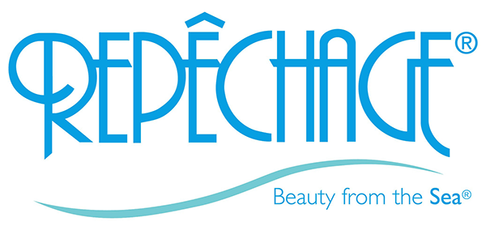

Beauty treatmentsProvided by a highly qualified and experienced practitioner at our daily clinics.
Medical studies indicate that only 20% of skin ageing is due to our genes, whilst the balance of 80% is due to controllable factors such as UVA/UVB light and pollution.
Many common skin problems are also linked to an excessive build up of dead skin cells. This not only congests pores but also makes the skin thick, rough and dull looking. With this in mind, we have created a range of gel peels and facials, designed to strengthen and defend the skin against environmental stresses, as well as to effectively exfoliate and resurface sluggish, sun damaged and ageing skin, and reduce the appearance of fine lines and wrinkles, acne and hyper-pigmentation. These procedures can help the skin appear healthy, plumper, tighter and have more radiance when used with a home care skin regime.
All treatments require a consultation (£60 refundable deposit towards treatment). During the consultation we explain all the options and recommend the most suitable treatment or combination of treatments for you. Please use prices as a guide.
CACI Ultimate
The CACI Microlift uses a tiny micro-current that helps to tone, lift and re-educate the muscles in the face to their original position. Firmness is re-established to sagging muscles and circulation is stimulated which improves muscle tone and counteracts dryness in a course of 10 treatments.
Ultimate CACI Anti-Ageing Facial1 ½ hour
A powerful combination of microdermabrasion and LED phototherapy with a wrinkle comb and Hydratone mask for more intensive treatment.
CACI Ultimate Booster Facial45 minutes
Special occasion facial or booster treatment.
CACI Jowl Lift30 minutes
Developed specially to target muscle laxity around the jaw line with new quad probes or can be combined with non-surgical facelift.
Environ
Using the IonZyne DF machine to enhance penetration of a cocktail of vitamins, peptides and growth factors into lower layers of skin using sound waves and electrical pulses.
Advanced Active Vitamin Treatment1 ½ hour
Suitable for all skin types. Includes a deep cleansing treatment and stimulates collagen to improve elasticity, increase hydration and boost radiance. It will leave the skin looking radiant and dewy after 1 session.
Active Vitamin Treatment1 hour
Includes treatment of areas of concern such as frown and smile lines and active vitamin penetration with the use of an Alginate mask.
Cool Peel Treatment1 hour
A low strength lactic acid to reduce the skin’s PH and trigger the release of growth factors, which creates tighter, smoother skin. Ideal for clients with lines, wrinkles, problem skin, rosacea and aged skin.
Gatineau
Gatineau Collagen Booster Facial1 ¼ hours
A replenishing wrinkle reducing treatment, this collagen rich mask combats dehydration, plumps out and smoothes fine lines. Includes face and scalp massage.
Jan Marini Skin Research
Age Intervention Regeneration Facial1 hour
For all skin types and provides immediate skin resurfacing and rejuvenation.
The mask incorporates powerful anti-ageing and anti-inflammatory ingredients to retain high levels of skin regeneration.
C-Esta Facial1 hour
For all skin types with soluble vitamin C and DAE complex to encourage collagen production repair and enhance facial tone. The skin will appear smoother, brighter, firm and contoured.
Repéchage 
Repéchage Four Layer Facial1 ¼ hours
Producing instant results, this unique facial utilises the natural therapeutic properties of seaweed to rescue, retrieve and give the skin a second cleanse to appear strikingly re-vitalised and hydrated. Optional deep cleanse. Includes face and scalp massage.
SkinCeuticals
Skin-C Firming Facial1 hour
Is ideal for a client who desires a luminous hydrated, firmer skin. The facial leaves the skin feeling and looking healthier with a radiant, firmer complexion and youthful appearance.
Blemish and Age Defence Facial1 hour
For imperfection-prone skin types, ie oily skin, large pores, fine lines, wrinkles and hyper-pigmentation.
Redness Neutralizer Facial1 hour
For all skin types and provides immediate skin resurfacing and rejuvenation.
Prevents and corrects redness associated with rosacea by combating environmental triggers and interrupting the inflammation and protecting the skin. Clinically proven to improve smoothness and radiance with homecare products.
Deep Pore-Cleansing Facial
Is perfect for any client experiencing acne type problems to help reduce oil, clear out impurities and give the skin hydration.
Refining Treatment for Men
This treatment is good for all skin types.
Men's treatments
More men today are concerned with their appearance as well as the ageing process. We want to help shave the years off without detracting from their masculinity.
Harrogate Health & Beauty Cosmetic Clinic offers a discreet and private environment which our male clients feel totally comfortable in.
The treatments are similar to those offered to our female clients, ie skin improvement, eyebrow shape, muscle relaxing treatments for frown lines and dermal fillers for nose to mouth lines.
The above treatments require a consultation which offers the opportunity to discuss concerns and design a treatment plan for the individual.
There is no obligation to go ahead with treatment should you not wish to.